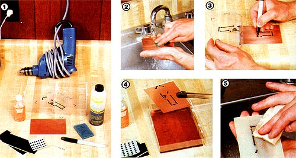
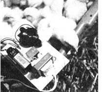
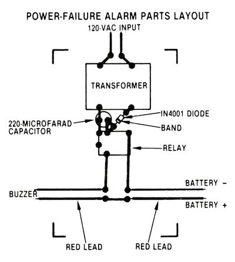
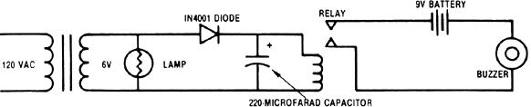
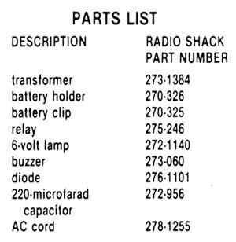

. . . and take full advantage of the possibilities of today's electronics.
Though electronics can seem pretty complex to the uninitiated, learning to use simple circuits (or to copy more complicated ones) really isn't difficult. Moreover, that knowledge can help you save a tremendous amount of time and money while allowing you to accomplish tasks that might otherwise be impossible. That's why you'll find, in nearly every issue of MOTHER, one or more useful projects that require at least a rudimentary low voltage circuit . . . and those devices are often mounted on what is called a printed circuit (PC) board.
Furthermore, for over a year now, my electronics articles have each been accompanied by access information, which has given a source for reasonably priced, commercially produced printed circuit boards . . . and I plan to continue that practice in the future. Nevertheless, some readers may want to learn how to make such boards, so that they can complete projects that are shown in this magazine, as well as start laying out their own electronic devices. Fortunately, Radio Shack offers a kit that can turn just about anyone into a designer of printed circuit boards.
THE FINE PRINT
A printed circuit is actually quite simple (but very cleverly conceived) in both design and execution. Its basis is a sheet of insulating material-usually either fiberglass or phenolic plastic-over which a very thin layer of copper is bonded. In order to turn the metal surface into a circuit, a design is placed on the copper . . . and any unwanted material is removed, using a chemical etching process.
To begin, the pattern that the electricity will eventually follow is drawn on the metal with an ink that's resistant to the etchant's action. And after the process is completed, a copper network that duplicates the original inked design will remain. These thin metal paths serve as the connecting "wires" for the components that make up the final product. Now printed circuits may sound exotic, but the builder who isn't familiar with electronic construction will find them perfectly suited to his or her lack of expertise . . . because, once the board's been properly laid out, there's little chance of making a wiring error.
Radio Shack's Printed Circuit Kit (ask for part number 276-1576) contains everything you'll need to make a pair of PC boards: two 3" X 4-1/2" printed circuit boards, one resist ink pen, one six-ounce bottle of etchant, a two ounce bottle of resist ink solvent, a 1/16° drill bit, and a plastic box to serve as the etchant tub. (The boards come coated with a protective lacquer that must be removed prior to use by scrubbing with water and an abrasive pad . . . which is included in the kit.)
LAYING OUT A CIRCUIT
Before you can begin constructing the board, you'll have to lay out the design. If you're making up your own circuit, first sketch out the pattern on a piece of paper. When you're satisfied with your arrangement, simply redraw the lines on the board with the resist ink pen.
If you're working from an article, though, it will probably feature a photograph or drawing of-the board that's needed to assemble the project. (The picture should be the same size
as the board you're going to prepare.) In such a case, transfer that design to your own board.
If you have sharp eyes and a steady hand, you may be able to freehand the circuit, using the photo or drawing as a guide (personally, I'm not quite good enough to do it this way). Actually, I find that the task is easier if I place a sheet of clear plastic over the magazine pattern and trace the design onto the transparent material. Then I use tape to hinge the top edge of the plastic to my new copper-clad board. By drawing on the metal and checking my progress and accuracy frequently with my see-through overlay, I can reproduce a pattern pretty faithfully. As an additional guide, I often use a straight pin to poke a few strategic holes through the plastic (and into the foil). If you try this approach, be careful to make punctures only in areas that will later be removed, to avoid damaging the circuit.
When drawing the circuit lines, make absolutely sure that you lay down a heavy mark with the resist ink pen. Any breaks or thin spots could permit the etchant to reach the bare metal. I have the best luck by starting with small, light strokes . . . then I build the line up, allowing each layer to dry before adding the next.
RUB-ON DECALS
Yet another way to place a circuit pattern onto a blank board is with dry transfer decals.
Radio Shack sells a package of four for under $3.00 (request part number 276-1577). Every sheet has an assortment of integrated circuit patterns-each with the proper hole spacings -as well as a selection of straight lines and curves of different radii.
To apply a decal, remove its backing and then position the chosen pattern on the copper-clad board. Next, connect the components, cut out the desired number of straight lines, and lay them onto the board in the appropriate locations. Now, using a ballpoint pen, trace over the circuit paths to transfer them to the board. Press gently at first, gradually increasing pressure, to prevent the decal from distorting or cracking. Finally, burnish the transferred pattern by laying the backing paper across the design and rubbing it firmly with the tip of the pen.
ETCHING
Your board is now ready for etching. Pour half the contents of the etchant bottle into the bottom part of the plastic box, saving the remainder of the liquid for your next project. Then put the printed circuit into the tray, face down, and gently agitate the mixture every so often.
When you're working with the etchant, it's a good idea to use tongs or wear gloves. The liquid isn't terribly dangerous, but it is corrosive and can irritate sensitive skin. (Besides, it always leaves a horrible yellowish brown stain on your skin that takes days to wear off)
The exact length of time required to remove all the unwanted copper will depend on the temperature, the amount of metal to be removed, the frequency of agitation, etc. But after 20 minutes, you can lift up the board for inspection. If any exposed copper remains, return the project to the solution.
After the board is completely etched, rinse it thoroughly under cold running water for at least two minutes. The used liquid should be discarded, but I don't recommend flushing it down the sink. Again, though the solution isn't very dangerous, it's probably better left out of our sewage systems. A decent burial would be a fitting end for it.
Now, all that remains is to strip off the resist ink (use the solvent supplied with the kit), or to remove the transfer decals. But don't put the solvent in the etching tray: It'll melt the plastic!
Mount parts to the finished board by drilling holes where component leads must pass. Then solder the components in place, using a small iron to prevent the foil from lifting off the board. And what if you've made a mistake? Easy. Open the circuits by scratching them with an Xacto-type knife .. . and bridge gaps with a short piece of wire.
By now, you're probably itching to put your new knowledge to work, so why not start by building the power-failure system shown here?
MOTHER'S POWER-FAILURE ALARM
Here's a chance to exercise your newly learned skill while putting together a very use ful device. This alarm is a simple circuit that monitors your AC (alternating current) power and alerts you if it's interrupted. Not only could such a warning save a freezer full of food from damage, it might also help you rescue a brood of day-old chicks that would otherwise freeze to death overnight.
Basically, the AC power (from a cord plugged into a wall outlet) holds one of the alarm's relays engaged, which prevents the buzzer from sounding. When the utility power fails, however, the relay drops out, the contacts close, and a 9-volt battery supplies power to a warning alarm. When power is restored, the device automatically resets and waits for the next power failure.
Construction begins (of course) with the production of a printed circuit board. Using the photo of the pattern shown here, fabricate a board according to the technique described in the main article. (The original for this project was built using only the contents of the Radio Shack Printed Circuit Kit, so you should have little trouble duplicating it.)
Once the board is finished, drill a hole through the center of each of the circular pads with the 1/16" drill bit. Now, mount and solder all the components to the board, but watch their orientations carefully. . . a mix up here could do irreversible damage.
Finally, test the unit by inserting the battery into its clip and holder. The buzzer should sound, and-when you plug the alarm into the wall-the noise should stop. If the buzzer fails to sound, or if it doesn't switch off when it should, recheck your work far errors.
With the power-failure alarm plugged in (and a healthy battery in place), you won't be caught unaware even by a midnight black out. And, if you'd like to develop a more ambitious power failure system, you'll find that the relay is hefty enough to control an emergency lighting setup, too!
For those readers wishing to build the alarm without the hassle of etching the PC board, Danocinths Inc., Dept. TMEN, P.O. Box 261, Westland, Michigan 48185 offers the following parts: a drilled and etched printed circuit board (specify RW113 for $6.75 . . . a complete kit of parts (including the board) for E20 ... and an assembled unit for $25. Please include $1.50 for shipping and handling. Michigan residents should add 4% sales tax.
|
 [1] To make a printed circuit board, you'll need the Radio Shack kit, a drill, and a circuit layout. [2] Start by cleaning the protective coating from the copper side of the board. [3] Then mark the circuit path with the special pen. [4] Place the marked board in the etchant solution and agitate it frequently. [5] Clean off the board with water and follow with the cleansing mixture. Be sure to wipe off the ink left on the circuit path. |
 |
 |
|
 |
 |
|